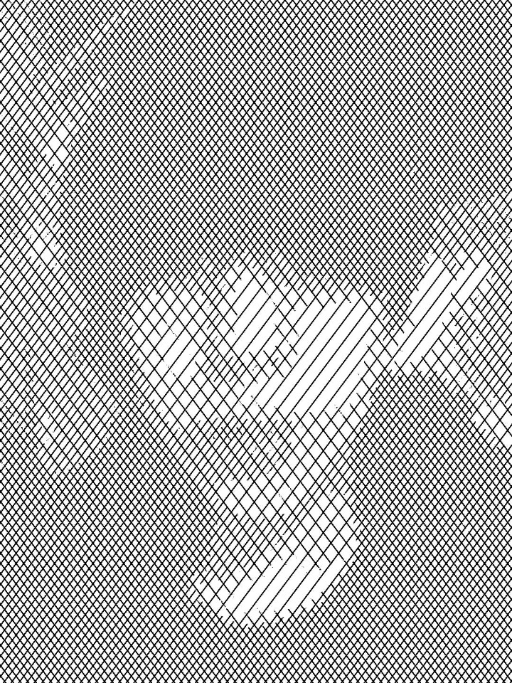
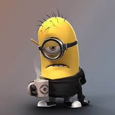
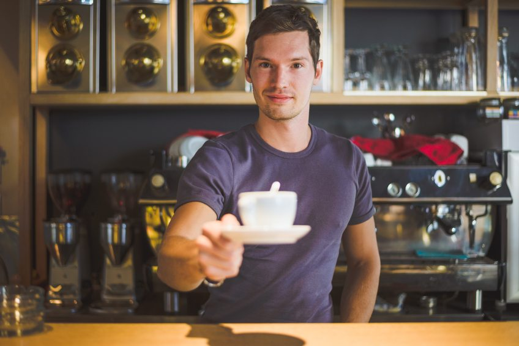

운영자 정보
이 름: 김상열
학 교: 국민대학교
전 공: 컴퓨터공학
학 번: 20143389
연락처: 010-9919-7662
커피를 주제로 정한 이유?
'카공족', '카피스족'이라는 신조어가 생긴 만큼 카페는 많은 이들에게 작업(업무 및 스터디)공간으로 이용되고 있습니다.
저도 졸음을 이겨낼 수 있는 작업공간으로 카페를 애용하는데요.
커피를 자주 마시다보니 자연스럽게 메뉴에 대한 호기심을 갖게 되었습니다.
이번 프로젝트를 위해 컨텐츠를 정해야 했는데요, 이를 기회삼아 커피에 대해 조사하고
알게된 정보를 다른 이들에게 공유하고자 커피를 주제로 선정하였습니다.
추천하는 커피 종류 (주관적인 견해)
시험기간에 끼니를 대신할 수 있는 메뉴로, 캬라멜 마끼아또 혹은 카페 모카에 휘핑크림을 얹어 먹는 것을 추천합니다.
충분한 당분을 섭취함으로써 배고픔을 잊을 수 있으며, 집중력이 향상됨을 느낄 수 있습니다.
졸음을 쫓아내기 위한 메뉴로는 에스프레소 혹은 아이스 아메리카노(일명 아아)에 샷을 추가하여 먹는 것을 추천합니다.
가성비 높은 메뉴로 몸 속에 피 대신 커피가 흐르는 듯한 느낌을 받을 수 있습니다.
달고 시원한 커피를 원하신다면 프라푸치노를 추천합니다.
커피 맛이 연하고 부드러우며, 얼음알갱이덕분에 시원함을 충분히 느낄 수 있습니다.
프로젝트를 진행하면서 느낀점!
실습할 때에는 마냥 단순했던 태그들이, 조그만 웹 페이지 하나를 만드는 데에도 어렵게 느껴졌습니다.
특히, 각 태그들을 유기적으로 구조화 하는 기술이 많이 부족함을 깨달았습니다.
또한 초안을 구현하는 과정에서 HTML과 CSS의 한계에 부딪혀 디자인을 수정하는 경험을 하면서,
JavaScript를 열심히 배워, 한계를 극복하겠다는 의지를 다지는 계기가 되었습니다.
앞으로의 수업은 더욱 더 열심히 따라가겠습니다! 잘 부탁드립니다:)